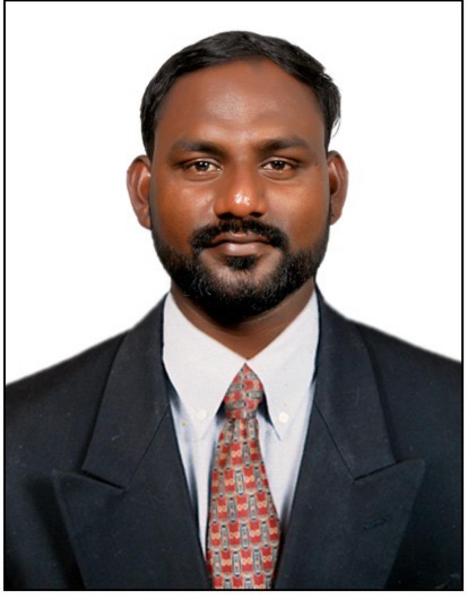

Ajay
Director, Founder & CEO
Leads corporate strategy, OEM manufacturer partnerships, hospital adoption, and commercial scale across Scan AI Private Limited.
Combining healthcare business execution, active statutory governance, and deep-tech medical imaging & surgical robotics architecture.

Leads corporate strategy, OEM manufacturer partnerships, hospital adoption, and commercial scale across Scan AI Private Limited.
Board Director & Co-Founder overseeing corporate governance, statutory compliance, strategic operations, and clinical program execution.

Chief architect of the OmniCBCT 3D reconstruction engine, 9-DOF C-arm sag calibration, Cero XVR registration pipeline, and OmniSpine™ 6-DOF robotic guidance roadmap.

Co-CTO leading advanced computational imaging research, core mathematical algorithms, software reliability, and multi-team R&D execution alongside Lead CTO Nihan.
Technical Command: Nihan (Lead CTO) & Rohan (CTO · IIT Kanpur) — directing 10+ dedicated specialists across software R&D, medical physics, FPD electronics, and surgical robotics.
Verified directly against MCA SPICe+ Part B Certificate of Incorporation, Forms INC-33 / INC-34, and Signed Board Resolution (Nov 2025).
| Registered Legal Name | SCAN AI PRIVATE LIMITED (Company Limited by Shares) |
|---|---|
| Corporate Identity Number (CIN) | U86909KA2025PTC210722 |
| Date of Incorporation | 08 November 2025 (MCA CRC Approval Letter Ref: AB8789047, dated 10 Nov 2025) |
| Company PAN & TAN | PAN: ABRCS7936A | TAN: BLRS19637J (Issued by Income Tax Department, India) |
| Registered Office Address | #14, Domino's Pizza, Back Gate Balaji Layout, Thalaghattapura, Bengaluru South, Karnataka – 560109 |
| Main Objects (Form INC-33 MOA) | NIC 86909 (Other Human Health Activities) — AI-based medical imaging, diagnostics, predictive analytics & healthcare tech |
| Share Capital & Founding Equity | Authorized Capital: ₹10,00,000 (1,00,000 Equity Shares @ ₹10) | Initial Subscribers: Ajay (900) & Manjula (100) |
| Charter & Governance Filings | Form INC-33 (e-Memorandum of Association) & Form INC-34 (e-Articles of Association) executed 01 Nov 2025 |
| Statutory Auditors (Board Res.) | M/s Taiju Mathew & Associates, Chartered Accountants (FRN: 025867S) — Board Resolution passed 21 Nov 2025 |
| Official Web & Corporate Email | scanai.health | cero.omniide.com | scanai@zohomail.in |